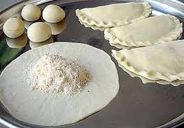

Garijalu

Ingredients:
ol>
- In a mixing bowl, combine maida, semolina, grated coconut, jaggery, and cardamom powder.
- Add water gradually and knead the mixture into a smooth dough.
- Divide the dough into small portions and roll each portion into a small ball.
- Flatten each ball into a small disc using a rolling pin.
- Place a spoonful of the filling (a mixture of grated coconut and jaggery) in the center of each disc.
Recipe:
- Fold the disc over the filling to form a half-moon shape and seal the edges using a fork or fingers.
- Heat ghee in a pan for frying.
- Gently slide the stuffed discs into the hot ghee and fry until golden brown on both sides.
- Remove from the ghee and drain excess oil on paper towels.
- Garijalu are ready to serve. Enjoy these sweet treats!